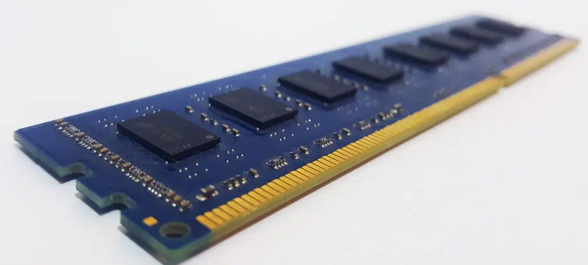
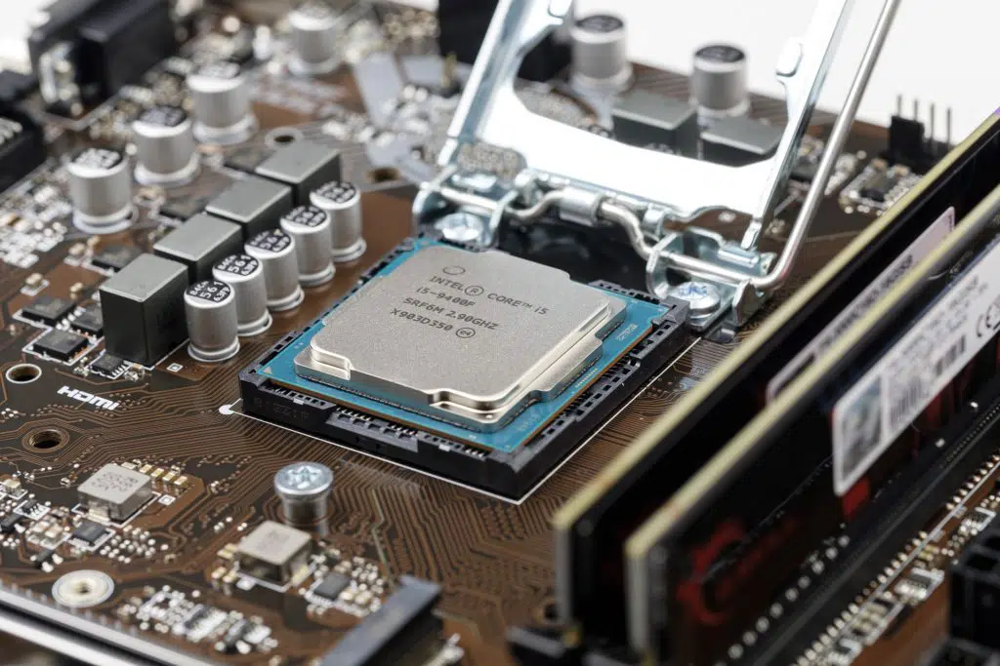

into essential tech insights with Computer Technicians. From upgrading laptop processors to understanding compatibility between Intel RAM and Ryzen, get answers to your pressing tech queries in our Basic Tech Info section.
Published: February 28, 2022 Updated: October 28, 2023 By: Brian Soko Category: Basic Tech Info Comments Off
Yes, you can upgrade your laptop processor from Core i5 to Core i7. However, the process is not as simple as swapping out the old processor for the new one. You may need to purchase a new motherboard that is compatible with the i7 processor in order to make the upgrade.
Published: February 16, 2022 Updated: October 28, 2023 By: Brian Soko Category: Basic Tech Info Comments Off
Will Intel RAM work with Ryzen motherboard? Yes it will. Any computer enthusiast knows that memory is an important part of your system. Usually, people don’t care much about it, because they assume that all RAM units are compatible with each other. If you are building a PC from scratch or simply upgrading your old one, you should know what memory modules are compatible with Ryzen. Ryzen 7 processors officially support DDR4 3466 MHz memory modules only!
Published: January 30, 2022 Updated: October 28, 2023 By: Brian Soko Category: Basic Tech Info Comments Off
Another question we get asked is: “Does the Intel Core i5 9400F come with a fan?”. Yes, it does come with Intel’s stock fan/cooler.
More about the Intel Core i5 9400F With the growing popularity of streaming on sites such as twitch and Youtube, rendering your videos faster can give you an advantage over other professionals in your field. A faster cpu will push through a video render much more quickly which means you can spend less time waiting around for something to finish and more time doing what you want. With this new line of CPUs from intel that have hyperthreading, they actually have even less single threaded performance than previous generations but when it comes to multi threaded performance compared to similarly priced CPUs with similar specifications it is vastly superior. This gives you an overall better experience for anything that could utilize more cores rather than just having added single thread speed.